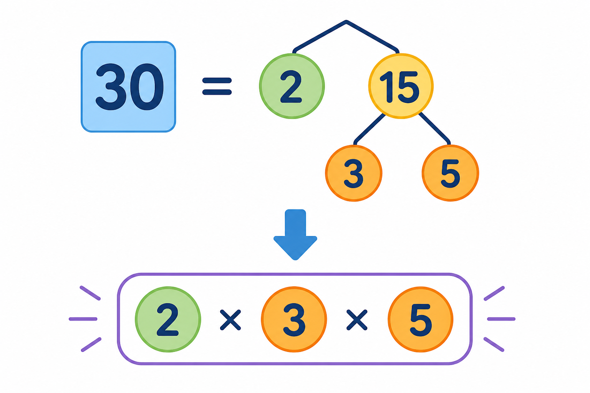

Co to jest? Що це?
Czynnik pierwszy to liczba pierwsza w rozkładzie — „klocek”, z którego budujesz liczbę.
Простий множник — просте число в розкладі: «кубик», з якого будуєш число.
Jak w szkole? Як у школі?
Rozkładaj przez kolejne liczby pierwsze: 2, 3, 5, 7… aż zostanie 1.
Розкладайте через наступні прості: 2, 3, 5, 7… доки не лишиться 1.
Przykład z życia Приклад з життя
Skracanie ułamka i wspólny mianownik. Przykład: 12 = 2·2·3.
Скорочення дробу і спільний знаменник. Приклад: 12 = 2·2·3.
12 = 2·2·3